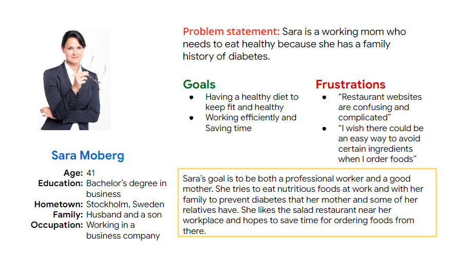
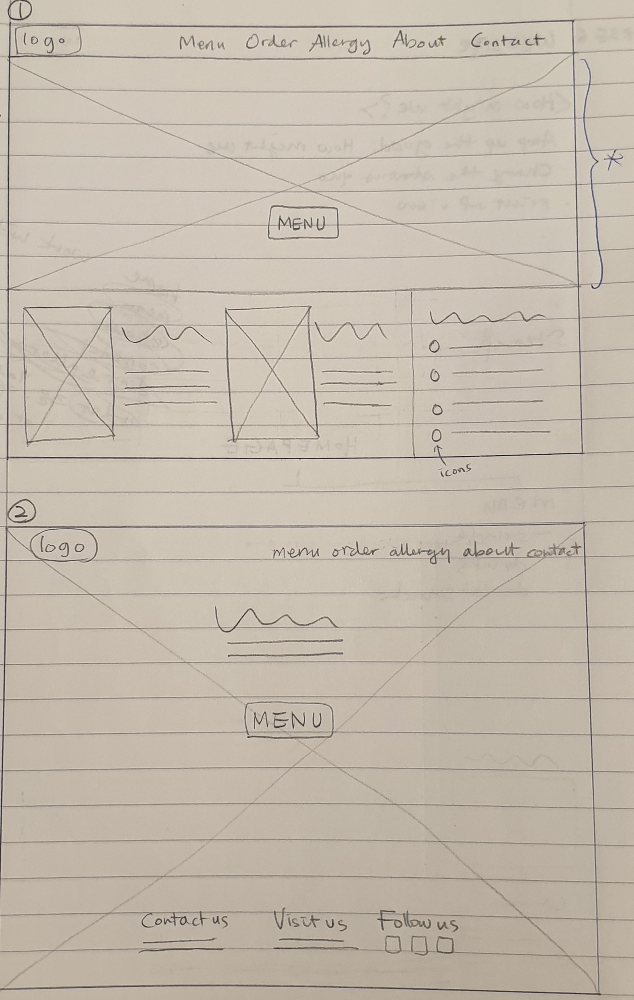
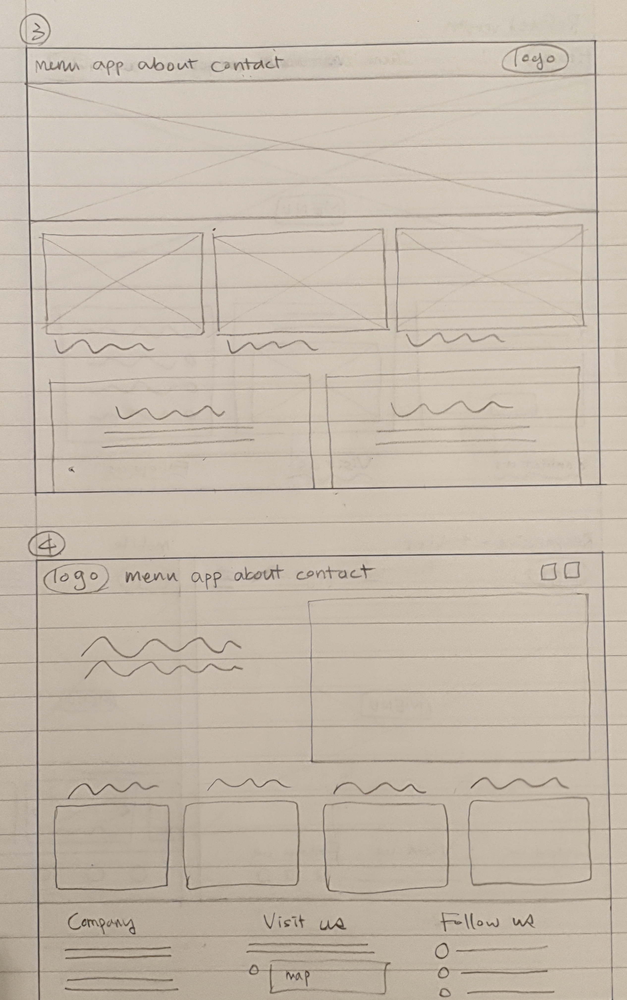
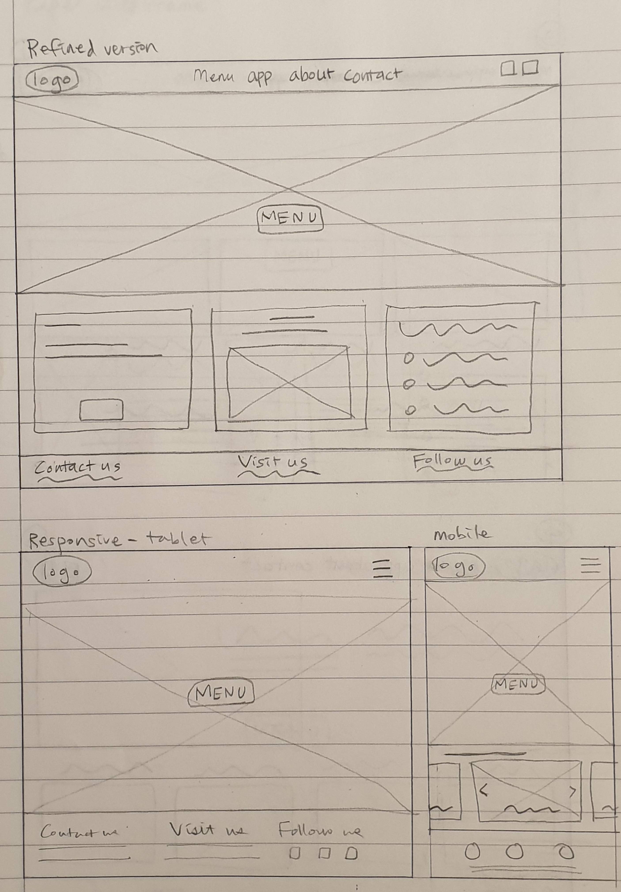

Hyelim Ahn
UX Designer & Front End Developer
Salad Bar - Web version
Project goal
Design a website that is used to order takeout or delivery from a local salad bar in Sweden that is simple and easy to use
My role
UX designer leading the project
Target audience
Busy adults who find it hard to prepare delicious and healthy meals
Key challenges
I conducted interviews which revealed a few stumbling blocks for users.
- Time: Many adults are too busy to cook because of their work, studies, families or other reasons.
- Food expenses: Most good and healthy restaurants are too expensive due to the high prices in Sweden.
- Ordering app: Hard to find a simple, easy way to order good and nutritious foods.
- Allergies: Buying a healthy and delicious meal is more difficult for people who have allergies.
Research study
Persona
Initial design
Sketches - start page



Wireframes
Responsive design
Start page - web version
.png)
Start page - tablet
.png)
Start page - mobile
.png)
User testing results
Main findings from the usability study:
- Text size: The text on the “Allergy” section is a little too small to read.
- Color match: Many users think that bright yellow color does not suit the dark green background color.
- Header size: Quite a few users regarded the header as narrow and wished it could be as big as the footer.
Prototype
Link: click here
Conclusion
If you want to know more, see my case study